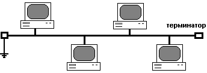
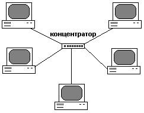
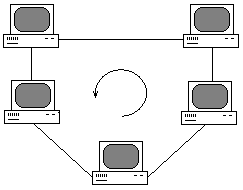
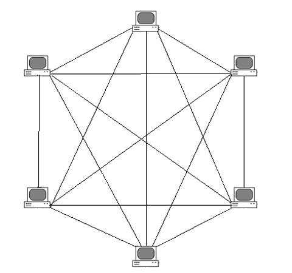
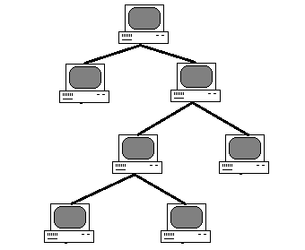

Топологии локальных сетей
Локальная вычислительная сеть (ЛВС) - это компьютерная сеть, покрывающая относительно небольшую территорию, такую как дом, офис или небольшую группу зданий. Одним из ключевых аспектов проектирования ЛВС является выбор топологии сети.
Что такое топология сети?
Топология сети - это способ описания конфигурации сети, схема расположения и соединения сетевых устройств. Топология определяет, как компьютеры, принтеры и другие устройства подключены в сети.
Физическая топология
Описывает реальное физическое расположение и соединение узлов сети. Она показывает, как кабели проложены и как устройства физически подключены друг к другу.
Логическая топология
Описывает то, как данные фактически передаются в сети. Она может отличаться от физической топологии. Например, в сети с физической топологией "звезда" может использоваться логическая топология "кольцо".
Почему важна топология?
Выбор топологии влияет на многие аспекты работы сети:
- Производительность сети
- Масштабируемость
- Надежность и отказоустойчивость
- Стоимость развертывания и обслуживания
- Сложность управления
Основные типы топологий локальных сетей

Шинная
Все устройства подключены к одному центральному кабелю (шине). Простая и недорогая в реализации, но при обрыве кабеля вся сеть перестает работать.

Звезда
Все устройства подключены к центральному узлу (концентратору или коммутатору). Отказ одного устройства не влияет на работу остальных, но выход из строя центрального узла парализует всю сеть.

Кольцо
Устройства соединены в замкнутый круг, где данные передаются в одном направлении. Обеспечивает равный доступ к сети для всех узлов, но обрыв кабеля нарушает работу всей сети.

Ячеистая
Каждое устройство соединено со всеми остальными. Обеспечивает высокую отказоустойчивость, но требует большого количества соединений и сложна в управлении.

Древовидная
Комбинация звездообразных и шинных топологий. Позволяет масштабировать сеть, но выход из строя корневого узла может нарушить работу всей сети.
Галерея топологий сетей
{{ image.title }}
{{ image.description }}
Сравнение топологий локальных сетей
| Топология | Преимущества | Недостатки | Применение |
|---|---|---|---|
| Шинная |
|
|
Небольшие офисы, учебные классы |
| Звезда |
|
|
Офисные сети, домашние сети |
| Кольцо |
|
|
Сети с детерминированным доступом |
| Ячеистая |
|
|
Критически важные сети, военные сети |
| Древовидная |
|
|
Крупные корпоративные сети, кампусные сети |
Выбор топологии
При выборе топологии сети следует учитывать:
- Размер сети и планируемый рост
- Бюджет на оборудование и кабельную инфраструктуру
- Требования к надежности и отказоустойчивости
- Ожидаемую нагрузку на сеть
- Квалификацию персонала, который будет обслуживать сеть
Современные тенденции
В современных сетях часто используются гибридные топологии, сочетающие преимущества нескольких базовых топологий. Например:
- Звезда-кольцо
- Звезда-шина
- Частично ячеистые сети
Также популярны беспроводные топологии, которые могут имитировать любую из проводных топологий.